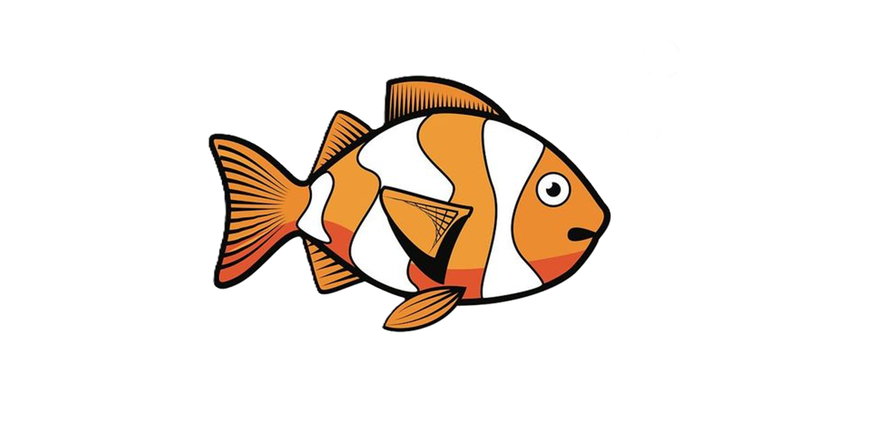
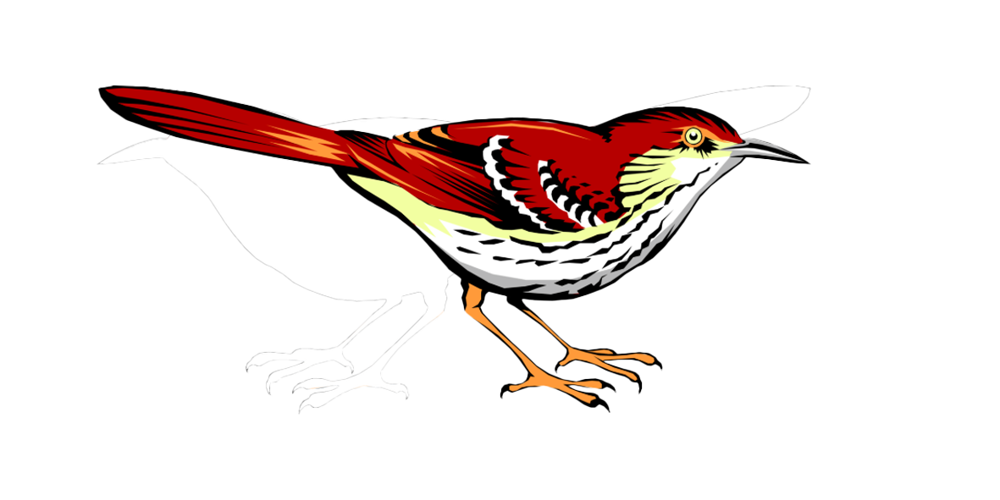
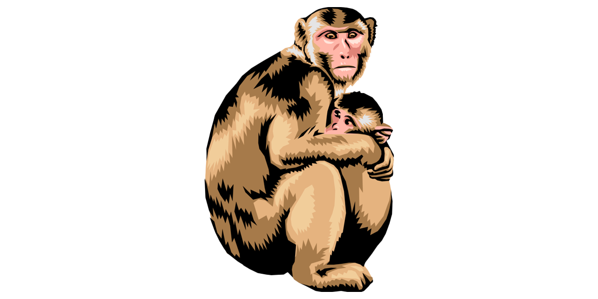

Web Development Final Assignment 2025
Lecturer: Eran Inbar.
Student: Tsachi Malik.
The Animal Kingdom
Introduction
The animal kingdom, known scientifically as Kingdom Animalia, encompasses a vast and diverse group of living organisms.
These organisms are multicellular, eukaryotic, and heterotrophic, meaning they rely on consuming organic material for energy.
This kingdom is characterized by its members' ability to move voluntarily, respond to stimuli, and reproduce sexually or asexually.
Basic Characteristics of Animals
- Multicellularity: Animals consist of multiple cells that form tissues and organs.
- Eukaryotic Cells: Their cells contain nuclei and other membrane-bound organelles.
- Heterotrophy: Animals cannot produce their own food and rely on other organisms for nutrition.
- Movement: Most animals have the capacity for locomotion at some life stage.
- Nervous and Muscular Systems: Most have specialized tissues that allow coordination and movement.
- Sexual Reproduction: While some reproduce asexually, most animals reproduce sexually, contributing to genetic diversity.
Classification and Phyla
Animals are classified based on body structure, developmental patterns, and genetic relationships.
The kingdom is broadly divided into invertebrates (animals without a backbone) and vertebrates (animals with a backbone).
Major Animal Phyla
- 🧽 Porifera (sponges): Simplest animals, with porous bodies and no true tissues.
- 🌊 Cnidaria (jellyfish, corals): Radially symmetrical with stinging cells (cnidocytes).
- ➖ Platyhelminthes (flatworms): Bilateral symmetry and simple organs.
- 🧵 Nematoda (roundworms): Unsegmented, cylindrical worms with complete digestive systems.
- 🪱 Annelida (segmented worms): Segmented bodies, developed organs, closed circulatory system.
- 🐚 Mollusca (snails, octopuses): Soft-bodied, often with a shell, include intelligent species like octopuses.
- 🕷 Arthropoda (insects, spiders, crustaceans): Largest phylum with jointed limbs and exoskeletons.
- ⭐ Echinodermata (starfish, sea urchins): Radially symmetrical adults, water vascular systems.
- 🫀 Chordata (vertebrates and some invertebrates): Includes animals with a notochord.
Vertebrate Subgroups
Vertebrates, a subphylum of Chordata, are animals with an internal backbone. These include:
1.  Fish
- Aquatic, gill-breathing vertebrates.
- Include jawless fish (e.g., lampreys), cartilaginous fish (e.g., sharks), and bony fish (e.g., salmon).
- Most have scales and reproduce through external fertilization.
2.  Amphibians
Amphibians
- Live both in water and on land.
- Undergo metamorphosis (e.g., from tadpole to frog).
- Moist, permeable skin used for respiration.
3.  Reptiles
Reptiles
- Dry, scaly skin; lay leathery eggs.
- Ectothermic (cold-blooded).
- Include snakes, lizards, turtles, and crocodiles.
4.  Birds (Aves)
- Endothermic (warm-blooded), with feathers and beaks.
- Lay hard-shelled eggs.
- Adapted for flight, though not all can fly (e.g., penguins, ostriches).
5.  Mammals
- Endothermic vertebrates with hair or fur.
- Produce milk for young through mammary glands.
- Include placental mammals, marsupials, and monotremes (e.g., platypus).
Modes of Nutrition
- Herbivores: Eat plants (e.g., deer).
- Carnivores: Eat other animals (e.g., lions).
- Omnivores: Eat both plants and animals (e.g., humans).
- Detritivores/Decomposers: Feed on decaying organic matter (e.g., earthworms).
Reproduction
Most animals reproduce sexually, involving the fusion of male and female gametes.
However, some can reproduce asexually (e.g., budding in hydra). Fertilization may be internal or external.
Adaptations and Evolution
Animals have evolved numerous adaptations to survive in diverse environments.
Evolution, driven by natural selection, has led to a wide array of body structures, behaviors, and reproductive strategies.
- Camouflage: To avoid predators.
- Migration: To find food or breeding grounds.
- Hibernation: To survive harsh climates.
Behavior and Intelligence
Animals exhibit a wide range of behaviors, from instinctual actions to learned behaviors.
Certain species (e.g., dolphins, chimpanzees, elephants) demonstrate high levels of intelligence and problem-solving abilities.
Ecological Roles
- Pollinators (e.g., bees)
- Seed dispersers (e.g., birds)
- Predators and prey: Maintain balance in food chains.
- Decomposers: Aid in nutrient cycling.
Human Impact
- Habitat destruction: Due to agriculture, urbanization, and deforestation.
- Pollution: Affects aquatic and terrestrial ecosystems.
- Climate change: Alters migration patterns and survival rates.
- Poaching and overfishing: Lead to endangerment and extinction.
Conservation Efforts
- Wildlife sanctuaries and national parks
- Breeding programs for endangered species
- Environmental laws and regulations
- Public awareness campaigns
Conclusion
The animal kingdom represents a magnificent diversity of life.
From microscopic sponges to intelligent primates, animals have adapted to nearly every environment on Earth.
Understanding their biology, classification, and ecological roles is crucial for their protection and for maintaining the planet's biodiversity.